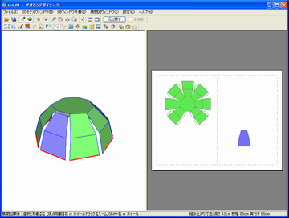
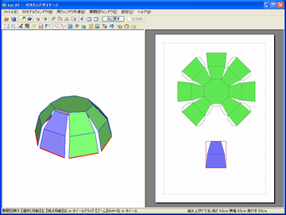
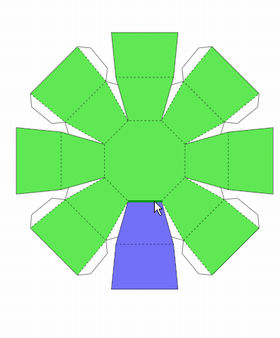
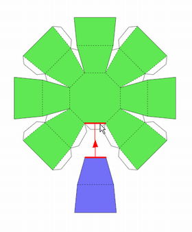
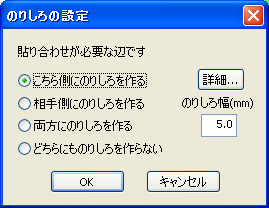

ここでは[展開図ウィンドウ]-[編集モード]について紹介します。
見やすく分かりやすい展開図を作ることはデータを配布する場合だけでなく、自身で工作をする場合にも役に立ちます。ここでは、単純な半球状のモデルを例題として、さまざまな編集の方法を紹介します。
展開図に対する編集モードの切替は、[展開図ウィンドウ]-[編集モード]から選択します。また、それ以外にも展開図ウィンドウ上で右クリックしてポップアップメニューを表示する方法、ツールバーからアイコンを選ぶ方法があります。
用紙のスペースを有効に使うため、または見やすい展開図を作るために、パーツを移動させます。
サンプルデータの[チュートリアル用]フォルダから[tut_01.pdo]を開きます。
パーツを移動させ1ページにまとめてみます。

ファイルを開いた様子
[展開図ウィンドウ]-[編集モード](又は右クリックメニュー)から[選択と移動]を選択して右のページの小さいパーツをクリックすると赤い枠が表示されます。
クリックしたパーツが赤い枠で囲まれています
パーツをドラッグしたまま左のページまで移動させます。
空白をクリックすると赤い枠が外れて移動終了となります。

パーツを左のページへ移動させました
マウスのドラッグで領域に含まれるパーツを一度に複数選択することもできます。また、カーソルキーで上下左右に一定の間隔ずつ小刻みに移動させることもできます。
編集モードが[選択と移動]でない場合でも、1つのパーツをドラッグで移動させることができます。
「切開辺を指定する」のぺージでは3Dモデルに切り込みを入れる方法を紹介しましたが、展開図に対しても切開する場所を指定して面を分離することができます。また、面を移動させて接続することもできます。
サンプルデータの[チュートリアル用]フォルダから[tut_03.pdo]を開きます。青い部分を切り離してみましょう。
[展開図ウィンドウ]-[編集モード](又は右クリックメニュー)から[面の分離と接続]を選び、辺の上にカーソルを移動させると、切断できる辺が濃い緑色で表示されます。サンプルで青い色が付けられている部分の付け根にカーソルを合わせクリックするとその部分で2つのパーツに分離されます。分離結果は3Dモデルにも反映されます。

カーソルを合わせた様子
分離を行った様子
分離されたパーツは接続し直すことができます。
上記の状態から、分離した辺にカーソルを合わせてクリックします。この時に赤く表示される矢印はパーツが吸着される方向を示します。カーソルの位置で移動方向が変わります。クリックして確定します。

赤い矢印の方向に吸着されます
[展開図ウィンドウ]-[編集モード](又は右クリックメニュー)から[文字の入力]を選ぶと、展開図上に文字を配置できます。作品のタイトルやパーツの名前、作り方の補足などを書き込むと良いでしょう。
極端に大きいパーツや逆に小さいパーツがあるとき、のりしろの大きさが一律のままでは作りにくい場合があります。Pepakura Designerでは個々ののりしろの大きさを変更できる機能があるので、状況に応じて大きさを調整すると良いでしょう。
[展開図ウィンドウ]-[編集モード](又は右クリックメニュー)から[のりしろの編集]を選びます。
対象となるのりしろをクリックし、[詳細設定]ダイアログからのりしろ幅を調整します。
のりしろの有無の設定やのりしろが付く辺の入れ替え、のりしろ両端の角度も設定が可能です。

個別ののりしろ毎に設定を変更できます